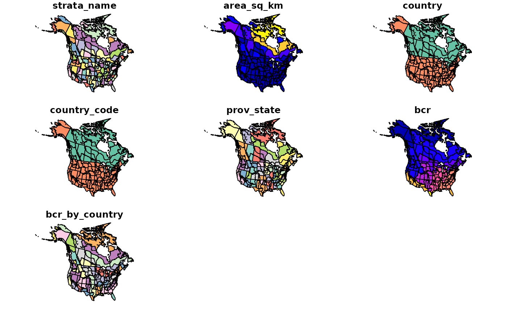

Load one of the included spatial data files (maps) as a simple features
object (sf package)
Usage
load_map(stratify_by = NULL, type = "strata")
Arguments
- stratify_by
Character. Stratification type. One of
"prov_state", "bcr", "latlong", "bbs_cws", "bbs_usgs".
- type
Character. "strata" or political map ("North America", "Canada"
or "US"/"USA"/"United States of America").
Examples
# Toy example with Pacific Wren sample data
# First, stratify the sample data
strat_map <- load_map(stratify_by = "bbs_cws")
# simple plot of the map
plot(strat_map)

# or use ggplot2
library(ggplot2)
ggplot(data = strat_map) +
geom_sf(aes(fill = strata_name), show.legend = FALSE)